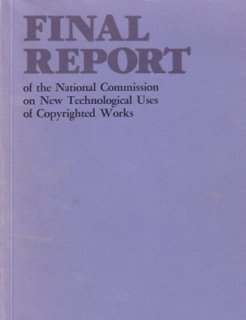

Welcome to digital-law-online.info, a web site created by Professor Lee A. Hollaar of the School of Computing at the University of Utah. Initially, this site provided supplementary material to Professor Hollaar's treatise "Legal Protection of Digital Information." It now contains an online version of that book and in the future will contain links to other sites useful in understanding law in the digital age, as well as other online texts.
|
This treatise by Professor Hollaar was published by BNA Books on November 26, 2002. The following material is available online:
|
|
|  |
The National Commission on New Technological Uses of Copyrighted Works (CONTU)
was established by Congress to determine how the Copyright Act of 1976
should address computers and copy machines. Chapter 3 of its final report
discusses copyright law as applied to computer software and databases.
Although frequently cited, this report is not easily available. At present, we are making Chapter 3 available in both searchable PDF (about 4.3 MBytes) and HTML forms. Although we have proofread the output of the OCR program, there still may be errors. Eventually, the entire report will be available here. |
Development of the treatise and this web site was supported in part by Summit Law Group, Lineo, and The Bureau of National Affairs and BNA Books.
If you have comments or suggestions about this web site, you can email them to dlo_comments@uofu.net. However, we are unable to provide legal advice or answer specific questions about the law.
This web site is hosted by the School of Computing at the University of Utah, and is subject to this disclaimer.
Last updated: 04-12-2003